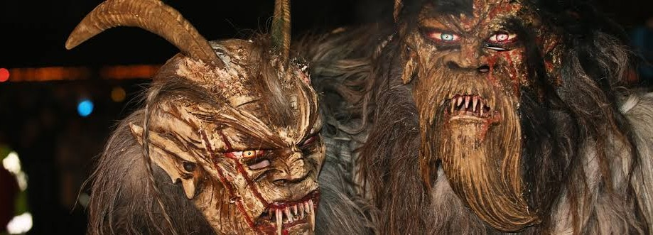
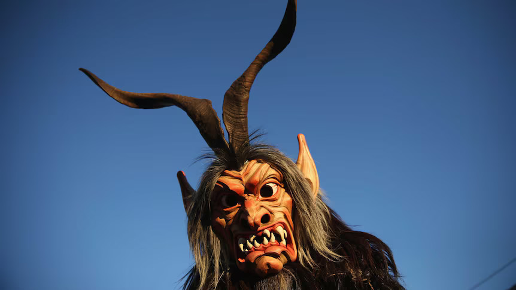
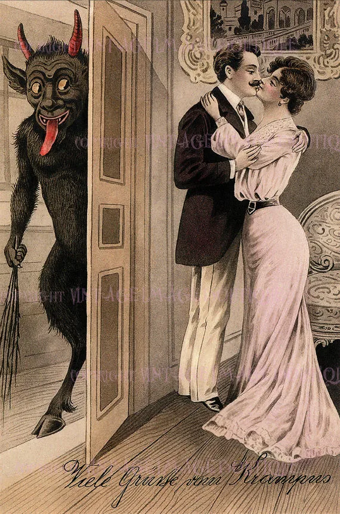
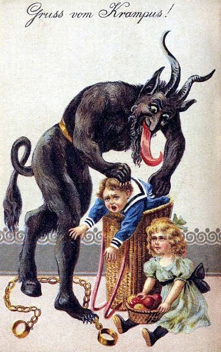

The Krampus of South Tyrol

The first snow of December came early to the village of San Vito. By sunset, the rooftops were white, the narrow streets were empty, and the mountains had disappeared behind a curtain of falling snow. Lena stood at the window of her Nonna's house, watching the last people hurry toward the warmth of their homes.
Tomorrow was December 5th. Krampus Night. In Tyrol, everyone knew what that meant.
They were supposed to be men from the village dressed in heavy fur, wearing enormous carved masks with horns, bells, and long black hair.
They would run through the streets beside Saint Nicholas, rattling chains and frightening anyone who dared to get too close. Lena had seen them before,
she wasn't afraid, at least, that was what she told her younger brother, Matteo. "They're just people in costumes," she said, Matteo looked unconvinced.
"Nonna says there was a real Krampus once." Lena laughed, "Nonna says a lot of things." From the kitchen came her Nonna's voice. "Not things. Stories." Lena turned,
her Nonna was standing in the doorway, holding two mugs of hot chocolate, looking toward the mountains. "The old people here used to say that the Krampus wasn't always a costume."
"What do you mean?" Matteo asked, Nonna set the mugs down. "Before the villages had electricity, before roads reached the high valleys, there were shepherds who stayed alone
in the mountains through the winter. They told stories of something that walked through the snow after dark." She paused.
"It had horns." Matteo's eyes widened.
"And bells." Lena rolled her eyes.
"Of course." Her Nonna smiled. "And it only came when someone was lying." That made Lena stop laughing. She shot back, "That's ridiculous."
"Perhaps." Nonna picked up her mug. "But there is an old rule in these mountains." Lena looked confused. "What rule?" Nonna took a sip. "Never follow bells into the forest."
_________________________________________________________________________________________________________________________________________________

_________________________________________________________________________________________________________________________________________________
The next evening, the village was alive. Torches flickered against the snow. People crowded along the street, waiting for Saint Nicholas and the Krampus procession.
Then came the bells.
CLANG.
CLANG.
CLANG.
A group of enormous figures appeared at the end of the road. They wore black and brown furs. Their faces were hidden behind wooden masks, each one carved with sharp teeth, twisted expressions, and enormous horns.
The children screamed, The adults laughed. The Krampus ran through the streets, shaking chains and ringing bells. Lena watched from the edge of the crowd, then she noticed something strange.
One Krampus wasn't moving with the others. He stood at the far end of the street, watching her. His mask was different, it wasn't painted. It looked old, Very old. Two enormous horns curled upward from his head, and long strands of dark hair hung around a face that seemed almost too realistic to be carved. Lena stared. The Krampus raised one hand, pointing at her. She blinked, he was gone. "Lena?" She turned, Matteo was beside her. "Did you see him?" she asked, trembling, Matteo looked confused "See who?" "The one with the old mask." Matteo shook his head. "I didn't see anyone." Lena looked back toward the street, nothing, only snow.
_________________________________________________________________________________________________________________________________________________
That night, Lena couldn't sleep. The house was silent, then she heard it.
CLANG.
Her eyes opened. CLANG. A bell, outside. She sat up, Nonna's warning came back to her. Never follow bells into the forest. Another sound. CLANG. Closer. Lena got out of bed. She went to the window. A trail of footprints crossed the snow outside, they led away from the house, toward the forest, beside them were strange marks. Deep scratches. Like something with enormous claws had walked alongside the footprints. Lena should have gone back to bed. Instead, she put on her coat.
_________________________________________________________________________________________________________________________________________________
_________________________________________________________________________________________________________________________________________________
The forest swallowed the village lights almost immediately. Snow covered the branches, and the moon shone between them. Lena followed the bells.
CLANG.
CLANG.
CLANG.
She reached a clearing. There was an old stone chapel there, she had never seen it before. The door stood open, inside, a single candle burned. Lena stepped closer. On the wall above the doorway was an old wooden carving, a horned figure. Below it were several names carved into the stone. Most were so old they could barely be read. But one name was fresh.
LENA.
She stumbled backward. The bell stopped. Silence filled the forest. Then something breathed behind her. Lena slowly turned. The Krampus stood between the trees. he was enormous.Snow rested on his horns. His bells hung silently from his fur. Lena couldn't move. The creature tilted its head. Then, in a deep voice, it said: "Why did you follow?" Lena swallowed. "I... I heard the bells." Krampus shook its head "You knew the rule." She thought of her Nonna. "Yes." The Krampus stepped forward. "Then why?" Lena looked at the chapel. "I wanted to know if the stories were true." The creature stared at her. Then it removed its mask. Lena expected to see a monster. Instead, she saw an old man's face. Pale. Tired. Sad. "I was curious once too," he said. "What happened to you?" The old man looked toward the mountains. "I followed the bells." The wind moved through the trees. "I never found my way home." Lena's heart raced. "Are you a ghost?" The old man smiled faintly. "No." He lifted his mask. "I am a warning." Suddenly, bells rang throughout the forest. Dozens of them. The trees seemed filled with shadows. Lena heard footsteps all around her. The Krampus pointed toward the village."Go." She didn't argue. She ran.
_________________________________________________________________________________________________________________________________________________
When Lena reached the edge of the village, dawn was beginning to brighten the mountains. Her Nonna was waiting outside the house. She didn't look surprised. "You followed the bells." Lena nodded. Nonna sighed. "I hoped you wouldn't." "Why didn't you tell me the whole story?" "Because children are curious." Lena looked back toward the forest. "Who was he?"Nonna was silent for a moment. Then she said: "Every village has stories about people who disappeared in the mountains." She touched Lena's shoulder. "Some stories are meant to frighten us. And some?" Nonna looked toward the snowy forest. "Some are meant to keep us alive." Behind them came a distant sound. CLANG. Lena froze. Her Nonna heard it too. Neither of them turned around. The bell rang again. CLANG. Then another. And another. From somewhere deep in the forest, a whole procession of bells began to move through the snow.Nonna quietly closed the door. "Remember the rule." Lena nodded. Never follow bells into the forest. And from that winter onward whenever the Krampus came running through San Vito, Lena never laughed at the masks again. Because she knew that somewhere beyond the village lights, among the silent pines and frozen mountain paths, something with enormous horns was still walking. And listening. For the sound of footsteps following behind.
The End.
About Krampus
The Krampus is a horned anthropomorphic figure who, in the Central and Eastern Alpine folkloric tradition, is said to accompany Saint Nicholas on visits to children during the night of 5 December (Krampusnacht; "Krampus Night"), immediately before the Feast of St. Nicholas on 6 December. In this tradition, Saint Nicholas rewards well-behaved children with small gifts, while Krampus punishes badly behaved ones with birch rods.
The origin of the figure is unclear; some folklorists and anthropologists have postulated that it may have pre-Christian origins, although historians generally consider this unlikely, as it is not attested until the 16th century. In certain traditional parades and in such events as the Krampuslauf ("Krampus run"), some young men dressed as Krampus attempt to scare the audience with their antics. Krampus is featured on holiday greeting cards called Krampuskarten.
Krampuskarten Gallery
'Krampuskarten cards' are holiday greeting cards which are traditionally sent around Krampusnacht (December 5th). Below are some examples of these cards, most of which originate from Germany, Austria, and Italy from the mid to late 19th century, with the third dated as 1907. Two of them use the words "Gruß vom Krampus!" which translates from German to "Greetings from Krampus!"

"Viele Grüsse vom Krampus"
"Many Greetings from Krampus"

"Gruss Vom Krampus!"
"Greetings from Krampus!"

"Gruss Vom Krampus. 1907"
"Greetings from Krampus. 1907"